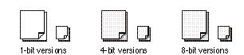

|
Stationery Pad IconsA stationery pad is a template with standard contents that the user can create from a document. Each time a user opens a stationery pad, a new documentis opened with the same contents as the stationery pad. The stationery pad icon uses the outline of a page, similar to the document icon, but with the lower-right corner turned up and a second page visible in the background. Figure 8-37 shows the default icons that appear in the Finder if you don't supply a custom icon for stationery pads. Figure 8-37 Default stationery pad icons  You can customize a stationery pad icon by adding graphic elements to the stationery document page. Your stationery pad icon should look just like your document icon except that it has the second page in the background and the lower-right corner of the first page turned up. |